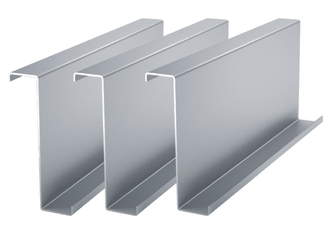
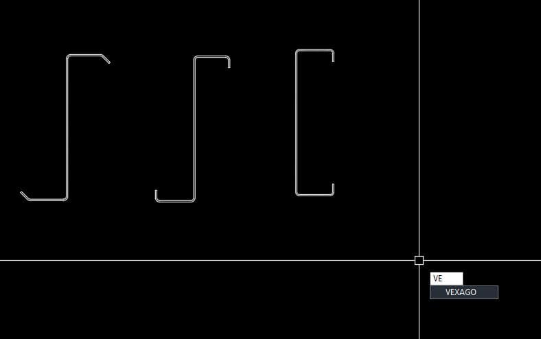

Trong quá trình triển khai bản vẽ kết cấu thép, việc vẽ chi tiết mặt cắt các loại xà gồ C và Z thường mất khá nhiều thời gian nếu thực hiện thủ công, đặc biệt là khi phải xử lý chính xác các góc bo (fillet) hay mép gấp (lip). Để giải quyết vấn đề này, hôm nay chuyên mục AutoCAD Lisp xin giới thiệu đến các bạn một công cụ cực kỳ hữu ích: Lisp vẽ tiết diện xà gồ C và Z cán nguội bản cập nhật hoàn thiện.
Lisp được tối ưu hóa với thuật toán xử lý Polyline khép kín vô cùng chuẩn xác, mang đến những ưu điểm vượt trội:
Enter hoặc Space ở các lần dùng sau nếu không muốn thay đổi thông số, giúp tăng tốc độ làm việc đáng kể.VEXAGO - Hướng dẫn tuỳ chỉnh lệnh trong AutolispAP hoặc kéo thả file lisp vào màn hình CAD).VEXAGO và nhấn Enter.Z<Cao>*<Cánh 1>*<Cánh 2>*<Độ dày> hoặc Z<Cao>*<Cánh 1>*<Cánh 2>*<Mép gấp>*<Độ dày> (Ví dụ: Z250*62*68*2.5)C<Cao>*<Cánh>*<Mép gấp>*<Độ dày> (Ví dụ: C200*50*20*2)
Bạn có thể tải lisp trực tiếp theo đường dẫn hoặc liên kết bên dưới:
DrawPurlin.lspChúc các bạn áp dụng thành công Lisp này vào công việc để tăng tốc độ triển khai bản vẽ! Đừng quên chia sẻ nếu thấy hữu ích.